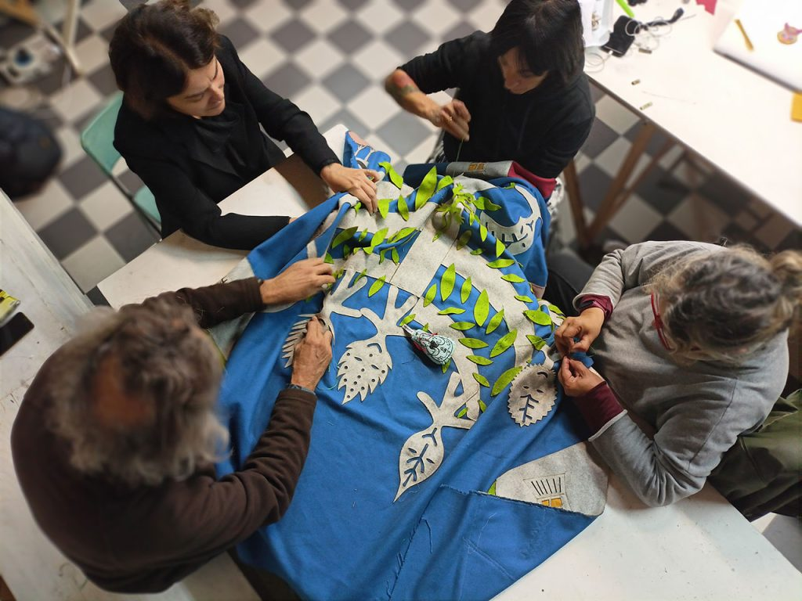

Serpica Naro

Italian activist fashion collective born during Milan Fashion Week in 2005 as a fictional designer created to critique precarious labour conditions in the fashion industry. Conducts workshops, research and events around open-source branding, intellectual property and worker empowerment in the creative industries.
Contacts
SerpicaLab, via Montegani, Milano
+39 340 8791 892
serpica@serpicanaro.org